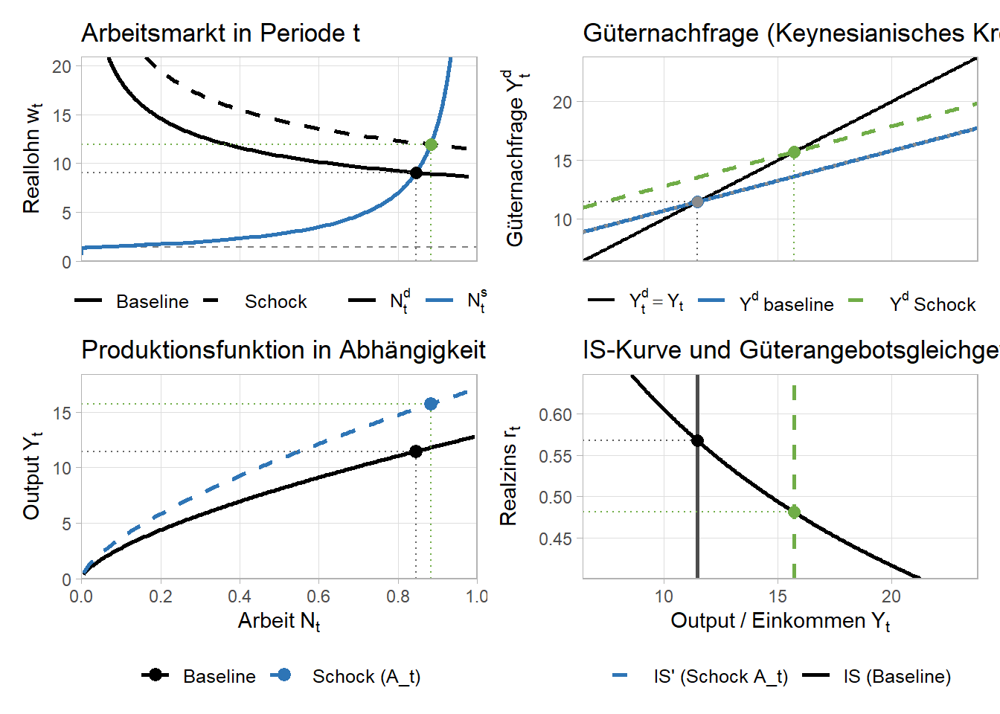

Code
library(ggplot2)
library(patchwork)
# ==============================================================================
# 1. ZENTRALE PARAMETERDEFINITION (Single Source of Truth)
# ==============================================================================
BASE_PARAMS <- list(
K_t = 10.0,
delta = 0.10,
theta_t = 1.40,
theta_t1 = 1.20,
G_t = 0.50,
G_t1 = 0.50,
sigma = 1.00,
beta = 0.96,
A_t = 6.00,
A_t1 = 8.00,
alpha = 0.33
)
SHOCK_PARAMS <- modifyList(BASE_PARAMS, list(A_t = 8.00))
# ==============================================================================
# 2. MODELL-SOLVER
# ==============================================================================
solve_macro_model <- function(p) {
with(p, {
labor_eq_t <- function(w) {
Nd <- K_t * ((1 - alpha) * A_t / w)^(1 / alpha)
Ns <- 1 - theta_t / w
return(Nd - Ns)
}
w_t <- uniroot(labor_eq_t, interval = c(theta_t + 1e-6, 1000))$root
N_t <- 1 - theta_t / w_t
Y_t <- A_t * K_t^alpha * N_t^(1 - alpha)
D_t <- Y_t - w_t * N_t
eval_given_r <- function(r, Y_hyp = Y_t) {
k_n_ratio <- (alpha * A_t1 / (r + delta))^(1 / (1 - alpha))
w_t1 <- (1 - alpha) * A_t1 * (k_n_ratio)^alpha
N_t1 <- 1 - theta_t1 / w_t1
if (is.na(N_t1) || N_t1 <= 0 || is.na(k_n_ratio) || k_n_ratio <= 0) {
return(list(
excess_demand = NA, I_t = NA, Y_IS = NA, Yd = NA,
Y_t1 = NA, N_t1 = NA, K_t1 = NA, w_t1 = NA, D_t1 = NA
))
}
K_t1 <- k_n_ratio * N_t1
I_t <- K_t1 - (1 - delta) * K_t
B_I <- I_t
Y_t1 <- A_t1 * K_t1^alpha * N_t1^(1 - alpha)
D_t1 <- Y_t1 + (1 - delta) * K_t1 - w_t1 * N_t1 - (1 + r) * B_I
PV_t1 <- (w_t1 * N_t1 + D_t1 - G_t1) / (1 + r)
W <- (Y_hyp - G_t) + PV_t1
mpc <- 1 / (1 + beta^(1 / sigma) * (1 + r)^((1 - sigma) / sigma))
C_t <- mpc * W
Yd <- C_t + I_t + G_t
excess_demand <- Yd - Y_hyp
denom <- 1 - mpc
Y_IS <- if (abs(denom) > 1e-8) (mpc * (PV_t1 - G_t) + I_t + G_t) / denom else NA
S_t <- Y_hyp - G_t - C_t
C_t1 <- (1 + r) * S_t + w_t1 * N_t1 + D_t1 - G_t1
list(
r_t = r, w_t = w_t, N_t = N_t, Y_t = Y_t, D_t = D_t,
C_t = C_t, I_t = I_t, S_t = S_t, G_t = G_t, Yd = Yd, Y_IS = Y_IS,
w_t1 = w_t1, N_t1 = N_t1, K_t1 = K_t1, Y_t1 = Y_t1,
D_t1 = D_t1, C_t1 = C_t1, G_t1 = G_t1, W = W, PV_t1 = PV_t1,
excess_demand = excess_demand,
check_t1 = Y_t1 + (1 - delta) * K_t1 - (C_t1 + G_t1)
)
}
r_max <- alpha * A_t1 * ((1 - alpha) * A_t1 / theta_t1)^((1 - alpha) / alpha) - delta
r_min <- max(-delta + 1e-5, -0.99)
r_star <- uniroot(
function(r) eval_given_r(r, Y_hyp = Y_t)$excess_demand,
interval = c(r_min, r_max - 1e-6)
)$root
out <- eval_given_r(r_star, Y_hyp = Y_t)
out$eval_given_r <- eval_given_r
out$r_max <- r_max
out$params <- p
return(out)
})
}
eq0 <- solve_macro_model(BASE_PARAMS)
eq1 <- solve_macro_model(SHOCK_PARAMS)
# ==============================================================================
# 3. STATISCHE GGPLOT2 + PATCHWORK GRAFIK
# ==============================================================================
theme_macro <- theme_light(base_size = 11) +
theme(
panel.grid.minor = element_blank(),
legend.position = "bottom",
legend.title = element_blank(),
legend.box = "horizontal",
legend.margin = margin(t = 0, r = 4, b = 0, l = 4),
legend.text = element_text(size = 9.5)
)
# Gemeinsame x-Achse für die linke Spalte (N_t)
n_limits <- c(0, 1.0)
n_breaks <- seq(0, 1.0, by = 0.2)
# Gemeinsame x-Achse für die rechte Spalte (Y_t)
Y_eq0 <- eq0$Y_t
Y_eq1 <- eq1$Y_t
Y_temp <- eq1$eval_given_r(eq0$r_t, Y_hyp = Y_eq1)$Y_IS
r_min_common <- max(-min(BASE_PARAMS$delta, SHOCK_PARAMS$delta) + 0.01, -0.05)
r_max_common <- min(eq0$r_max, eq1$r_max) * 0.70
r_low <- max(r_min_common, min(eq0$r_t, eq1$r_t) - 0.08)
r_high <- min(r_max_common, max(eq0$r_t, eq1$r_t) + 0.08)
r_grid_is <- seq(r_low, r_high, length.out = 220)
Y_is0 <- sapply(r_grid_is, function(r) eq0$eval_given_r(r)$Y_IS)
Y_is1 <- sapply(r_grid_is, function(r) eq1$eval_given_r(r)$Y_IS)
y_min_plot <- max(0, min(c(Y_eq0, Y_eq1, Y_is0, Y_is1), na.rm = TRUE) * 0.75)
y_max_plot <- max(c(Y_eq0, Y_eq1, Y_temp, Y_is0, Y_is1), na.rm = TRUE) * 1.12
y_limits <- c(y_min_plot, y_max_plot)
y_breaks <- pretty(y_limits, n = 5)
y_breaks <- y_breaks[y_breaks >= y_min_plot & y_breaks <= y_max_plot]
# --- LINKE SPALTE: Arbeitsmarkt (oben) & Produktionsfunktion (unten) ---
w_max <- max(eq0$w_t, eq1$w_t) * 1.75
w_min_grid <- max(0.05, min(BASE_PARAMS$theta_t, SHOCK_PARAMS$theta_t) * 0.4)
w_grid <- seq(w_min_grid, w_max, length.out = 300)
df_labor_curves <- rbind(
data.frame(
w = w_grid,
N = BASE_PARAMS$K_t * ((1 - BASE_PARAMS$alpha) * BASE_PARAMS$A_t / w_grid)^(1 / BASE_PARAMS$alpha),
Kurve = "N^d",
Szenario = "Baseline"
),
data.frame(
w = w_grid,
N = pmax(0, 1 - BASE_PARAMS$theta_t / w_grid),
Kurve = "N^s",
Szenario = "Baseline"
),
data.frame(
w = w_grid,
N = SHOCK_PARAMS$K_t * ((1 - SHOCK_PARAMS$alpha) * SHOCK_PARAMS$A_t / w_grid)^(1 / SHOCK_PARAMS$alpha),
Kurve = "N^d",
Szenario = "Schock"
),
data.frame(
w = w_grid,
N = pmax(0, 1 - SHOCK_PARAMS$theta_t / w_grid),
Kurve = "N^s",
Szenario = "Schock"
)
)
p_labor <- ggplot(df_labor_curves, aes(x = N, y = w, color = Kurve, linetype = Szenario)) +
geom_hline(yintercept = BASE_PARAMS$theta_t, linetype = "dashed", color = "grey50") +
geom_line(linewidth = 0.95) +
geom_segment(
data = data.frame(x = eq0$N_t, y = eq0$w_t),
aes(x = x, xend = x, y = 0, yend = y),
linetype = "dotted", color = "grey40", inherit.aes = FALSE
) +
geom_segment(
data = data.frame(x = eq0$N_t, y = eq0$w_t),
aes(x = 0, xend = x, y = y, yend = y),
linetype = "dotted", color = "grey40", inherit.aes = FALSE
) +
geom_segment(
data = data.frame(x = eq1$N_t, y = eq1$w_t),
aes(x = x, xend = x, y = 0, yend = y),
linetype = "dotted", color = "#70AD47", inherit.aes = FALSE
) +
geom_segment(
data = data.frame(x = eq1$N_t, y = eq1$w_t),
aes(x = 0, xend = x, y = y, yend = y),
linetype = "dotted", color = "#70AD47", inherit.aes = FALSE
) +
geom_point(
data = data.frame(x = eq0$N_t, y = eq0$w_t),
aes(x = x, y = y),
color = "black", size = 2.6, inherit.aes = FALSE
) +
geom_point(
data = data.frame(x = eq1$N_t, y = eq1$w_t),
aes(x = x, y = y),
color = "#70AD47", size = 2.6, inherit.aes = FALSE
) +
scale_x_continuous(limits = n_limits, breaks = n_breaks, expand = c(0, 0)) +
scale_y_continuous(limits = c(0, w_max), expand = c(0, 0)) +
scale_color_manual(
values = c("N^d" = "black", "N^s" = "#2E75B6"),
labels = c("N^d" = expression(N[t]^d), "N^s" = expression(N[t]^s))
) +
scale_linetype_manual(
values = c("Baseline" = "solid", "Schock" = "dashed"),
labels = c("Baseline" = "Baseline", "Schock" = "Schock")
) +
guides(
color = guide_legend(nrow = 1, override.aes = list(linetype = "solid")),
linetype = guide_legend(nrow = 1, override.aes = list(color = "black"))
) +
labs(
title = "Arbeitsmarkt in Periode t",
x = NULL,
y = expression(Reallohn~w[t])
) +
theme_macro +
theme(axis.text.x = element_blank(), axis.ticks.x = element_blank())
n_grid <- seq(0.005, 0.995, length.out = 250)
df_prod <- rbind(
data.frame(
N = n_grid,
Y = BASE_PARAMS$A_t * BASE_PARAMS$K_t^BASE_PARAMS$alpha * n_grid^(1 - BASE_PARAMS$alpha),
Szenario = "Baseline"
),
data.frame(
N = n_grid,
Y = SHOCK_PARAMS$A_t * SHOCK_PARAMS$K_t^SHOCK_PARAMS$alpha * n_grid^(1 - SHOCK_PARAMS$alpha),
Szenario = "Schock (A_t)"
)
)
y_prod_max <- max(df_prod$Y) * 1.08
p_prod <- ggplot(df_prod, aes(x = N, y = Y, color = Szenario, linetype = Szenario)) +
geom_line(linewidth = 0.95) +
geom_segment(
data = data.frame(x = eq0$N_t, y = eq0$Y_t),
aes(x = x, xend = x, y = 0, yend = y),
linetype = "dotted", color = "grey40", inherit.aes = FALSE
) +
geom_segment(
data = data.frame(x = eq0$N_t, y = eq0$Y_t),
aes(x = 0, xend = x, y = y, yend = y),
linetype = "dotted", color = "grey40", inherit.aes = FALSE
) +
geom_segment(
data = data.frame(x = eq1$N_t, y = eq1$Y_t),
aes(x = x, xend = x, y = 0, yend = y),
linetype = "dotted", color = "#70AD47", inherit.aes = FALSE
) +
geom_segment(
data = data.frame(x = eq1$N_t, y = eq1$Y_t),
aes(x = 0, xend = x, y = y, yend = y),
linetype = "dotted", color = "#70AD47", inherit.aes = FALSE
) +
geom_point(
data = data.frame(
x = c(eq0$N_t, eq1$N_t),
y = c(eq0$Y_t, eq1$Y_t),
Szenario = c("Baseline", "Schock (A_t)")
),
aes(x = x, y = y, color = Szenario),
size = 2.8, inherit.aes = FALSE
) +
scale_x_continuous(limits = n_limits, breaks = n_breaks, expand = c(0, 0)) +
scale_y_continuous(limits = c(0, y_prod_max), expand = c(0, 0)) +
scale_color_manual(values = c("Baseline" = "black", "Schock (A_t)" = "#2E75B6")) +
scale_linetype_manual(values = c("Baseline" = "solid", "Schock (A_t)" = "dashed")) +
labs(
title = "Produktionsfunktion in Abhängigkeit von N",
x = expression(Arbeit~N[t]),
y = expression(Output~Y[t])
) +
theme_macro
# --- RECHTE SPALTE: Keynesianisches Kreuz (oben) & IS-Kurve (unten) ---
Y_grid <- seq(y_min_plot, y_max_plot, length.out = 220)
Yd_base <- sapply(Y_grid, function(y) eq0$eval_given_r(eq0$r_t, Y_hyp = y)$Yd)
Yd_shift <- sapply(Y_grid, function(y) eq1$eval_given_r(eq0$r_t, Y_hyp = y)$Yd)
Yd_final <- sapply(Y_grid, function(y) eq1$eval_given_r(eq1$r_t, Y_hyp = y)$Yd)
df_keynes <- rbind(
data.frame(Y = Y_grid, Yd = Y_grid, Kurve = "gg"),
data.frame(Y = Y_grid, Yd = Yd_base, Kurve = "base"),
data.frame(Y = Y_grid, Yd = Yd_shift, Kurve = "impuls"),
data.frame(Y = Y_grid, Yd = Yd_final, Kurve = "schock")
)
keynes_breaks <- c("gg", "base", "schock")
keynes_labels <- c(
"gg" = expression(Y[t]^d == Y[t]),
"base" = expression(Y^d~baseline),
"schock" = expression(Y^d~Schock)
)
p_keynes <- ggplot() +
geom_line(
data = subset(df_keynes, Kurve == "gg"),
aes(x = Y, y = Yd, color = "gg"),
linetype = "solid", linewidth = 0.85
) +
geom_line(
data = subset(df_keynes, Kurve == "base"),
aes(x = Y, y = Yd, color = "base"),
linetype = "solid", linewidth = 1.0
) +
geom_line(
data = subset(df_keynes, Kurve == "impuls"),
aes(x = Y, y = Yd),
color = "grey55", linetype = "dotted", linewidth = 0.85
) +
geom_line(
data = subset(df_keynes, Kurve == "schock"),
aes(x = Y, y = Yd, color = "schock"),
linetype = "dashed", linewidth = 1.0
) +
geom_segment(aes(x = Y_eq0, xend = Y_eq0, y = y_min_plot, yend = Y_eq0), linetype = "dotted", color = "grey35") +
geom_segment(aes(x = y_min_plot, xend = Y_eq0, y = Y_eq0, yend = Y_eq0), linetype = "dotted", color = "grey35") +
geom_segment(aes(x = Y_eq1, xend = Y_eq1, y = y_min_plot, yend = Y_eq1), linetype = "dotted", color = "#70AD47") +
geom_point(aes(x = Y_eq0, y = Y_eq0), color = "#2E75B6", size = 2.6) +
geom_point(aes(x = Y_temp, y = Y_temp), color = "grey55", size = 2.3) +
geom_point(aes(x = Y_eq1, y = Y_eq1), color = "#70AD47", size = 2.6) +
scale_x_continuous(limits = y_limits, breaks = y_breaks, expand = c(0, 0)) +
scale_y_continuous(limits = y_limits, breaks = y_breaks, expand = c(0, 0)) +
scale_color_manual(
breaks = keynes_breaks,
values = c("gg" = "black", "base" = "#2E75B6", "schock" = "#70AD47"),
labels = keynes_labels
) +
guides(
color = guide_legend(
nrow = 1,
override.aes = list(
color = c("black", "#2E75B6", "#70AD47"),
linetype = c("solid", "solid", "dashed")
)
)
) +
labs(
title = "Güternachfrage (Keynesianisches Kreuz)",
x = NULL,
y = expression(Güternachfrage~Y[t]^d)
) +
theme_macro +
theme(axis.text.x = element_blank(), axis.ticks.x = element_blank())
df_is <- rbind(
data.frame(r = r_grid_is, Y = Y_is0, Kurve = "IS (Baseline)"),
data.frame(r = r_grid_is, Y = Y_is1, Kurve = "IS' (Schock A_t)")
)
p_is <- ggplot(df_is, aes(x = Y, y = r)) +
geom_vline(xintercept = Y_eq0, color = "grey30", linewidth = 0.9, linetype = "solid") +
geom_vline(xintercept = Y_eq1, color = "#70AD47", linewidth = 0.9, linetype = "dashed") +
geom_line(aes(color = Kurve, linetype = Kurve), linewidth = 1.0) +
geom_segment(aes(x = y_min_plot, xend = Y_eq0, y = eq0$r_t, yend = eq0$r_t), linetype = "dotted", color = "grey35") +
geom_segment(aes(x = y_min_plot, xend = Y_eq1, y = eq1$r_t, yend = eq1$r_t), linetype = "dotted", color = "#70AD47") +
geom_point(aes(x = Y_eq0, y = eq0$r_t), color = "black", size = 2.7) +
geom_point(aes(x = Y_eq1, y = eq1$r_t), color = "#70AD47", size = 2.7) +
scale_x_continuous(limits = y_limits, breaks = y_breaks, expand = c(0, 0)) +
scale_y_continuous(
limits = c(r_low, r_high),
labels = function(x) sprintf("%.2f", x),
expand = c(0, 0)
) +
scale_color_manual(values = c("IS (Baseline)" = "black", "IS' (Schock A_t)" = "#2E75B6")) +
scale_linetype_manual(values = c("IS (Baseline)" = "solid", "IS' (Schock A_t)" = "dashed")) +
labs(
title = "IS-Kurve und Güterangebotsgleichgewicht",
x = expression(Output~"/"~Einkommen~Y[t]),
y = expression(Realzins~r[t])
) +
theme_macro
# --- GESAMTKOMBINATION MIT PATCHWORK ---
(p_labor / p_prod + plot_layout(heights = c(1, 1))) |
(p_keynes / p_is + plot_layout(heights = c(1, 1)))